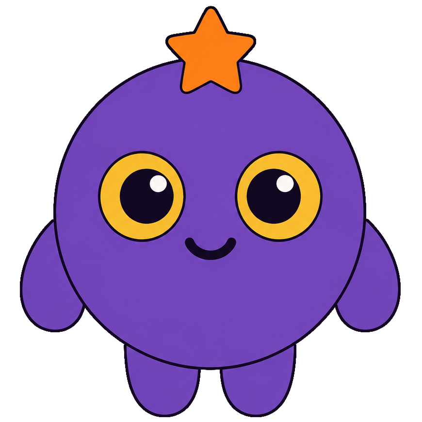

Quinki betaQuinki is a native desktop app for AI work: use your existing AI subscriptions (ChatGPT, Claude, GitHub Copilot, Grok) with parallel multi-agent chats, scheduled jobs, a Market of community-built tools, and the App Expert to extend the app from inside it. Everything stays on your machine.
Quinki is not a chat window. It is a work interface where agents act on your machine: visibly, on schedule, in parallel.
A separate companion app that reads Quinki's own architecture docs and helps you update, fix and extend the app from inside it, with sync and rollback built into the UI. Your in-app development agent.
A real interface for AI work: multi-agent chats with visible delegation blocks, session folders, multi-window, exports, themes, per-chat notifications, a debug log viewer.
A multi-process sidecar pool, auto-tuned to your CPU. 100 concurrent streaming sessions tested end-to-end: 0 errors, 0 RPC timeouts.
Schedule agent jobs for any hour with the built-in H24 scheduler. Crash recovery and stuck-turn detection keep long jobs alive across restarts.
Install community tools in one click: tabs, skills, agents, MCP servers, themes. Publish yours in minutes, with fork, PR and automatic validation (structure, static scan, secret detection, VirusTotal).
One toggle. Every model always uses the maximum reasoning level its provider supports: ChatGPT, Claude, GitHub Copilot, Grok, OpenRouter, Ollama or any OpenAI-compatible endpoint.
Sign in with the account you already pay for: ChatGPT Plus/Pro, Claude Pro/Max, GitHub Copilot, or SuperGrok. No API keys, no extra billing. Plus Ollama (free, local) and OpenRouter (pay-per-use).
No servers, no telemetry, no accounts required. Everything lives in ~/.quinki/ and chats go only to the provider you configure. AGPL-3.0.
Build your own tab, such as a knowledge base, notes, an RSS reader or an email manager, with the App Expert, and publish it. Quinki becomes a platform of community-built AI tools.
Tag agents with @name, or let the Orchestrator delegate across specialized agents. Delegation blocks stream live and cost zero context in the main conversation.
A catalog of community-built tools. Tabs are its heart: small AI apps, like knowledge bases, notes panels, RSS readers and email managers, that anyone can build inside Quinki with the App Expert and publish for everyone. Multi-repo support lets you add your own GitHub repos as extra catalogs.
Small AI apps inside Quinki: knowledge bases, notes panels, RSS readers, email managers. Build yours with the App Expert, publish it for everyone.
Ready-to-use agents with their own prompts, models and tool assignments. Install and chat immediately.
Knowledge modules injected into agent prompts when needed. Install from the Market or write your own.
Tool integrations through the Model Context Protocol: connect external services to your agents.
Color themes for the whole app, created by the community and applied with one click.
Add your own GitHub repos as extra catalogs. Your packages, one app, no searching around the web.
Quinki 1.0.0-beta.1 for macOS. No installer wizard: drag the app, launch it.
Quinki is in active beta. This is what's coming, in order.